BudgetSeal help guide
Everything you need to know about managing your budget with BudgetSeal.
What is BudgetSeal?
BudgetSeal is an envelope budgeting app. The idea is simple: every dollar you earn gets a job. You divide your money into virtual envelopes — groceries, rent, entertainment — and spend from them. When an envelope is empty, you've reached your limit for that category.
The app works entirely offline. Your data lives on your device, not on a server. You can optionally sync through Google Drive, or through a file you pick with your phone's file picker, to keep a backup or share with a partner.
- Add accounts — where your money lives (bank, cash, credit card)
- Create envelopes — one for each spending category
- Fund envelopes — distribute your income into envelopes
- Spend — each expense automatically draws from its envelope
Setting up
When you open BudgetSeal for the first time, a 3-step setup walks you through everything:
Step 1: Welcome
You'll see a quick overview of how envelope budgeting works. From here you can:
- Get started — set up a new household
- Restore my budget — bring back a budget from its sync folder, on Google Drive or a folder on your phone or in another app, or from a backup file (the .db file from Settings › Backup & restore). After a backup file the app closes; open it again and your budget is back
- Join a household — enter an invite code to join someone else's BudgetSeal
Step 2: Your household
Configure the basics:
- Household name — a label for your budget (e.g., "My Budget" or "Family")
- Base currency — the main currency you use (USD, EUR, etc.). It starts on your phone's region currency
- Period start day — when your monthly budget cycle starts (1st, 15th, etc.)
- First account — name, type (Cash/Bank/Credit/Digital), and opening balance. While you keep the suggested name, it follows the type you pick
- Categories — Add suggested categories is on by default (30 categories with subcategories); turn it off to create your own from scratch. Create envelopes for main categories (also on) adds a spending envelope for Food & drink, Transport, Shopping, Bills, Health, Entertainment and Home; their subcategories spend from it
The back arrow at the top returns to the welcome page. When you tap Create my budget with a name missing, the page scrolls to that field.
Step 3: Done
You're ready to go! Start using BudgetSeal opens Home, where the Get started checklist shows your next steps.
The Get started checklist
A new budget shows a checklist at the top of Home with the four basics of envelope budgeting:
- Record your income — money comes in first
- Create envelopes — one for each thing you spend on (already ticked if onboarding created them)
- Fund your envelopes — move money from Ready to assign into them
- Log an expense — it comes out of the matching envelope
Each step ticks itself when you do it, and tapping a step takes you there. When all four are done the checklist goes away for good; the × hides it sooner.
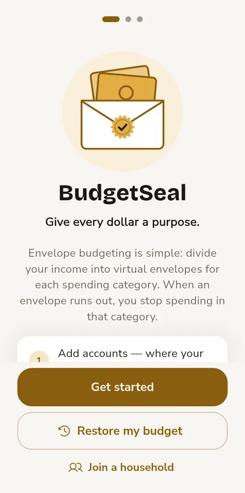
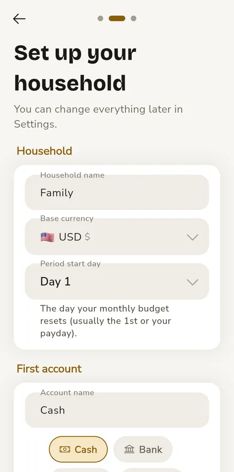
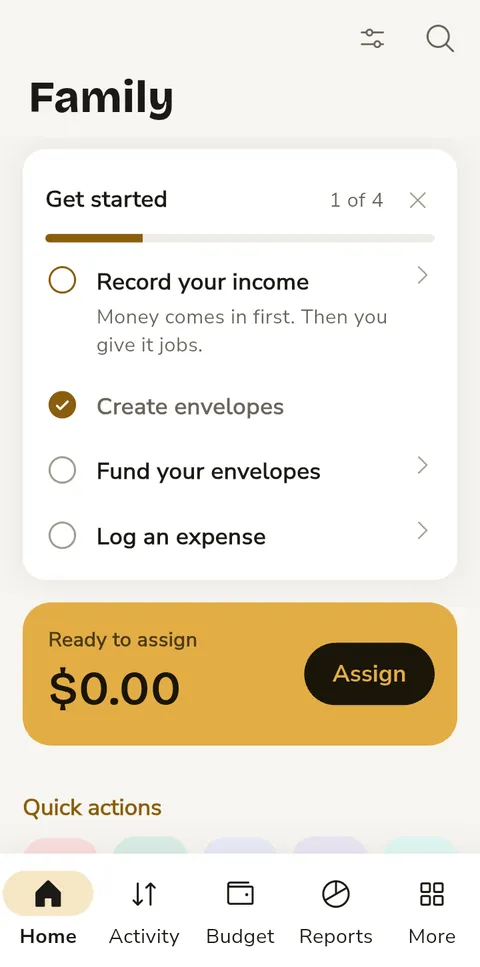
The home screen
The bottom navigation bar has 5 tabs:
| Tab | What it does |
|---|---|
| Home | Your budget first (Ready to assign, overspent envelopes, bills due), then quick actions, spending, net worth and recent activity |
| Activity | All transactions grouped by date, with search and filters |
| Budget | Your envelopes — see how much you've spent and what's left |
| Reports | Pick a period, read how it went, then open any report: budget vs actual, spending over time, places, income vs spending and net worth, subscriptions, year in review |
| More | A grid of tiles for every tool (accounts, categories, recurring, goals, etc.), then Settings, Help, and About |
Dashboard
The Home tab shows your financial overview at a glance. It's designed to be clean and scannable — the large title shrinks into a compact bar as you scroll:
- Get started — the checklist for a new budget (see above), until its four steps are done
- Your budget — what needs you now: the gold Ready to assign banner (tap Assign to fund envelopes), any overspent envelopes with a Cover button, and bills due in the next 7 days
- Quick actions — Expense, Income, Transfer, Fund (once you have envelopes) and Split, which opens the bill splitter
- Spending overview — donut chart showing where your money went, with income/expense/net stats (toggle between last 7 days and this month)
- Your money — your net worth. Tap it to go to Accounts.
- Recent activity — quick templates and latest transactions
To customize what appears on your dashboard:
- Tap the Customize button (the sliders icon, top-right)
- Drag sections to reorder them
- Toggle sections on/off
- Tap Reset to restore the default layout
The magnifier next to Customize searches your transactions, accounts and categories.
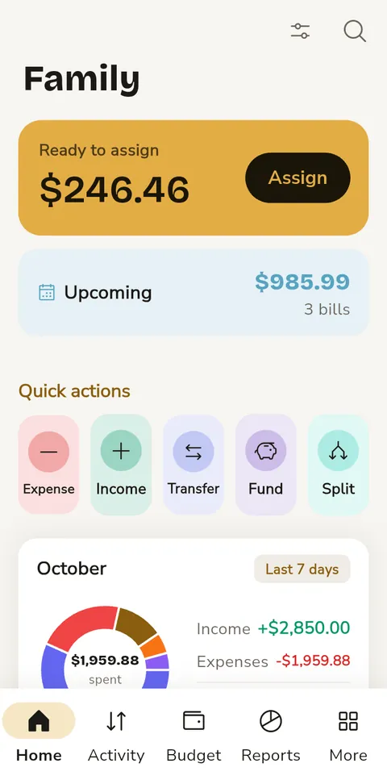
Accounts
Accounts represent where your money physically lives — a bank account, your wallet, a credit card, or a digital wallet (PayPal, Venmo, etc.).
Creating an account
- Go to More tab → tap Accounts
- Tap the + button
- Enter a name (e.g., "Chase Checking")
- Choose a type: Cash, Bank, Credit card, or Digital wallet
- Set the currency, decimal places and opening balance
- Tap Create account
Account detail
Tap any account to see its transactions and manage it. See all, next to Recent transactions, opens the Activity tab filtered to this account. From the 3-dot menu, you can:
- Reconcile balance — enter the balance your bank shows. You see the difference before confirming; if it matches, the account is simply marked reconciled, otherwise an adjustment is recorded. The balance card shows when you last reconciled
- Check a screenshot — take a screenshot of your bank app's transaction list and pick it here. BudgetSeal reads it on your phone and compares it with what you recorded on this account in the last 90 days: what's already recorded gets a tick, and anything missing is listed with an Add button that opens the form filled in
- Count cash (cash accounts) — count your notes instead of adding them up: tap + and − for each note (or tap the number to type it), and put coins and anything else in Other. The total is shown against what BudgetSeal expects; Use this count reconciles the account the same way, recording an adjustment only if they differ. Notes are listed for the common currencies (dollar, euro, pound, Lebanese and Syrian pound, dirham, riyal, lira, naira, rand, rupee, peso and more); for others, count everything in Other
- Archive account — hide the account (transactions are preserved). The balance must be zero first: transfer what's left to another account or adjust the balance, since archived accounts no longer count toward your money
- Convert back & close — for travel wallets with money left, return it and archive
- Delete permanently — if the account has transactions, you can archive it instead or delete them too
Archived accounts
When you archive an account, it disappears from the main list but its transactions are preserved. To see or restore archived accounts:
- On the Accounts screen, tap the 3-dot menu (top-right)
- Tap Show archived
- Archived accounts appear in a separate section at the bottom, dimmed
- Tap the unarchive icon next to an account to restore it
- Tap the menu again → Hide archived to hide the section
The same menu sorts accounts by name, balance or type.
Decimal precision
Some currencies use 0 decimal places (JPY, KRW), others use 3 (BHD, KWD). BudgetSeal auto-detects this based on the currency. You can override it per account if needed:
- Open the account and tap Account settings
- Change Decimal places (Auto, 0, 1, 2 or 3) and tap Save
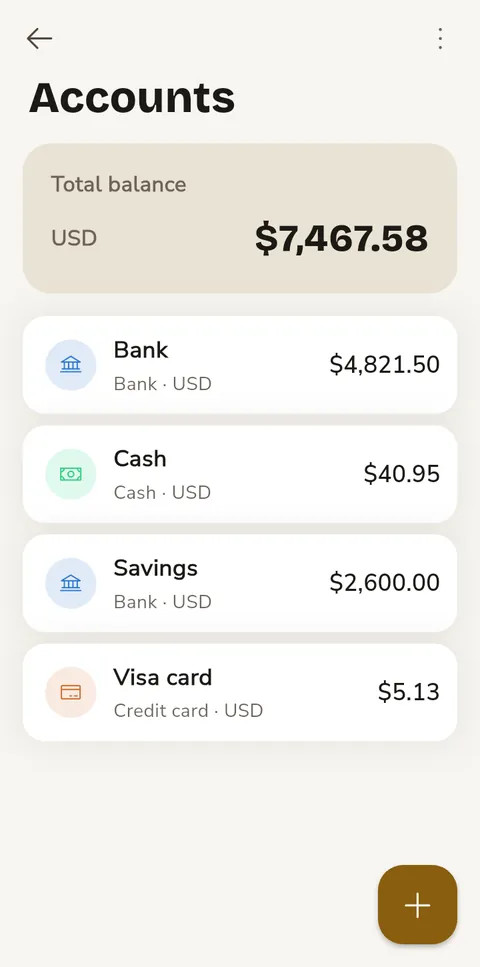
Forecast
The Home card Safe to spend today tells you how much you can spend each day until your next income without missing a bill: the money in your accounts, minus every bill, subscription and planned payment due before then, minus what your sinking funds keep for later, divided by the days left. If that's not enough, it says by how much you're short. It also shows the lowest your money will go in the next 90 days, and when.
Tap it for the Forecast: how the number adds up, a line of your balance over the next 90 days (touch it to see any day), and everything coming up. It uses your recurring bills and incomes, subscriptions (with their price changes) and planned payments. If you haven't set up your salary as a recurring income, BudgetSeal estimates it from the last three months and shows it as Usual income (estimate). Each currency has its own forecast — they're never added together.
Transactions
Every time money moves — you spend, earn, or transfer — you record a transaction. BudgetSeal supports three types:
| Type | What it does |
|---|---|
| Expense | Money leaves an account (and its linked envelope) |
| Income | Money enters an account (and goes to Ready to assign) |
| Transfer | Money moves between two accounts |
Entry modes
One screen (default for new budgets) puts everything on one page with the number pad already open:
- Type the amount first. The pad does sums too: 26 × 2 shows the result as you type
- What was it for? — type a title, or tap one of your recent entries underneath (for example Coffee · $4.50) to fill in the title, category, account and amount in one go
- The pills under it change the category and the date and time; the chip under the amount (for example USD · Bank) switches the account, and so the currency
- Once a category is picked, a card shows what's left in its envelope after this spending, and about how much a day that leaves until the end of the month. If it would overspend, the card turns red and offers Cover from another envelope or Ready to assign — one tap moves the money. You can still save without covering
- Income shows Ready to assign before and after; a transfer shows both accounts' balances before and after
- Note, Split, Receipt (camera) and Photo sit just above the number pad. Split divides the total into items: type the total, tap Split, then type each item's amount and pick its category. The first item keeps whatever is left, and each item shows what's left in its envelope. Tap × to remove an item
- Editing a transaction opens the same screen, already filled in, with its receipts. (A transaction spread over several accounts or currencies opens the full form instead.)
- Save shows the amount; Save & new keeps the screen open for the next one
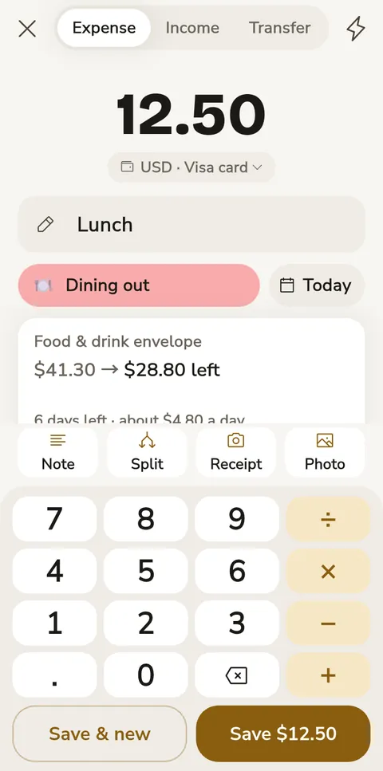
Sharing into BudgetSeal (Android)
Got a payment message from your bank, or a receipt photo or screenshot? Share it to BudgetSeal from any app (the Share button → BudgetSeal). The add form opens already filled in: the amount and currency, whether money went out or came in, and the shop as the title. A photo is read on your phone — nothing is sent anywhere — its total is used, and it stays attached as the receipt. Check the details, pick a category, and save. It reads messages in English, French and Arabic, from any bank. (On iPhone this comes later.)
Rules fill in the rest. When you save a shared payment with a category, BudgetSeal remembers the shop: next time it picks the same category and account. In Settings → Rules you can see them and add your own — when the text contains “Spinneys” → Groceries, Visa card, title “Spinneys”. The longest match wins; your own rules are never changed by the learned ones. Rules are shared with everyone on a shared budget.
Bank alerts and To review (Android)
BudgetSeal can suggest transactions from the notifications your bank or wallet app posts. Turn it on in Settings → Bank alerts: tap Allow in settings and switch BudgetSeal on in your phone's notification access list. Your apps show up under Apps to read once they post a notification — switch on your bank's. BudgetSeal reads only those apps, keeps their text on your phone, and never sends it anywhere.
Each payment it reads waits in To review (Home shows 1 payment to review): the amount, the shop and — if a rule knows the shop — the category, with the message underneath. Add opens the form filled in; check it and save. Dismiss drops it (Undo brings it back). Nothing touches your budget until you add it. If BudgetSeal took the wrong number — say your bank writes the balance first — fix the amount when you add it: it remembers which number is the payment for that bank.
Paying with change in another currency
Where two currencies are in use, you often pay in one and get change in the other — say $20 for a bill of LBP 1,350,000, and LBP 440,000 back. When your accounts use more than one currency, a new expense has a Change button (next to Receipt and Photo, or under the form in the full form). It opens Pay with change:
- You handed over — the amount and the account it came from (for example your dollar cash)
- Change you got — the amount and the account it goes into (for example your lira cash)
- Rate — the rate your budget uses for the pair. If the shop uses its own rate, tap it and type theirs
- Price is optional: enter it and the change is worked out for you, until you type the change yourself
What counts as spent is what you handed over minus the change, at that rate — in the example, $15.08 from the envelope, so a dollar envelope never ends up owing lira. The change goes into its account as an exchange, and the rate you used becomes the pair's last rate you got (see Exchange rates). The spending and the exchange are listed under each other's Related transactions.
Assisted mode walks you through step by step. A progress indicator (dots) shows which step you're on:
- Step 1 — Choose expense/income/transfer, then enter a title (the app may auto-detect the category)
- Step 2 — Pick or confirm the category
- Step 3 — Enter the amount, select an account, and tap Save
Classic mode shows all fields on one screen — useful for complex entries with multiple items, notes, or foreign currencies.
To switch modes: go to More → Settings → Entry mode. (Settings has a search box at the top — type a word like dark, currency or backup to find a setting.)
Faster logging
- Last account — a new transaction starts on the account you used last (transfers remember both accounts). Auto-fill can still switch it when you pick a category
- Recent categories — the category picker shows your most recent categories at the top, and opens on the type you're entering
- Today / Yesterday — the chips beside the date (Classic and Assisted), or the date pill in One screen
- Swipe the date — swipe left or right on the date to move it a day (right = the day before; not past today, or tomorrow in Classic). In Arabic the directions swap
- Templates — tap ⚡ at the top of the form, pick one, and the form fills in from it (it keeps the date you chose)
- Past months — adding from a past month on the Activity tab dates the transaction in that month
- Save & new — in classic mode, saves and clears the form for the next one, keeping the date and account
- Undo — the "Saved" message has an Undo button for a few seconds
- Calculator — when it opens on an amount, the amount is highlighted: typing replaces it, an operator or ⌫ edits it. While you type a sum like 12 + 5, the result shows under it (= 17)
- Quick add — type "Coffee 4.50" (or "4,50") in the bar at the bottom of the Activity tab; the form opens filled in, ready to save. The Quick add widget on your home screen opens a new transaction too
- Shortcuts — long-press the app icon for Add transaction, Fund envelopes and Upcoming bills. Tapping the daily reminder opens a new transaction
- Leaving the form with unsaved changes asks before discarding them. In assisted mode you can edit the title from the amount step and remove an item by tapping × on its chip
Adding a transaction (Classic mode)
- Tap the + button on the Activity tab for a new expense; long-press it for Income, Transfer or Split a bill
- Choose Expense, Income, or Transfer
- Tap the category icon in the colored header to pick a category (recent ones are at the top)
- Tap the amount in the header to enter it with the calculator
- Fill in the title, date (or tap Today/Yesterday) and optional note — they share one card
- Check the account — it starts on the one you used last
- Tap Add transaction, or Save & new to log another right away
Multi-item transactions (splits)
Need to split a grocery receipt across categories? Tap the Add item chip under the items to add more lines, each with its own amount, category, and optionally a different account.
Transfers between accounts
- Choose Transfer as the type
- Select the From and To accounts (⇅ swaps them)
- Enter the amount
- If the accounts are in different currencies, an exchange rate field appears — enter how much the destination receives
Duplicate detection
When you add a transaction, BudgetSeal checks for one on the same day with the same amount and category (including split items). If it finds one, a Possible duplicate dialog shows it (title, amount, date) and you can Save anyway or cancel. Edits aren't checked.
Auto-fill
When you pick a category, BudgetSeal can automatically fill in the account, title, and amount from your last transaction with that category. Configure what gets auto-filled in Settings → Auto-fill — it can also remember the last category per account, and you choose whether it overwrites fields you've already filled.
Receipts
Scan receipt (Classic) or Receipt (One screen) takes a photo of the receipt and attaches it; Gallery / Photo attach pictures you already have. On a transaction's page, Attach adds more and removing one asks first. To read a receipt's items automatically, use the bill splitter's camera — it reads the text offline, no internet needed.
Reading the Activity list
The Activity tab shows what each transaction did to your budget:
- Month card — at the top: how much of this month's budget is left (your spending envelopes' targets), a gold bar, and what you spent and earned. A past month that stayed within budget shows as "September sealed"
- One card per day — the day's name and date, with the day's net on the right
- More room — scrolling down slides the title and month tabs away; scrolling up brings them back. The selected month stays in the middle of the month tabs
- Under each expense — the envelope it came from and what was left in it right after ("Food & drink · $142.80 left"). In red: "over by …"; while the envelope is still below zero, its latest expense has a Cover button. An amber Not budgeted tag means the category has no envelope
- Income shows → Ready to assign — it's waiting for you to give it a job. Transfers show "Bank → Cash"
- Amounts — expenses in plain text (red is kept for overspending), income in green with a +, transfers in grey. Under the amount: the account and its balance right after the transaction. Filtered to one account, just the balance
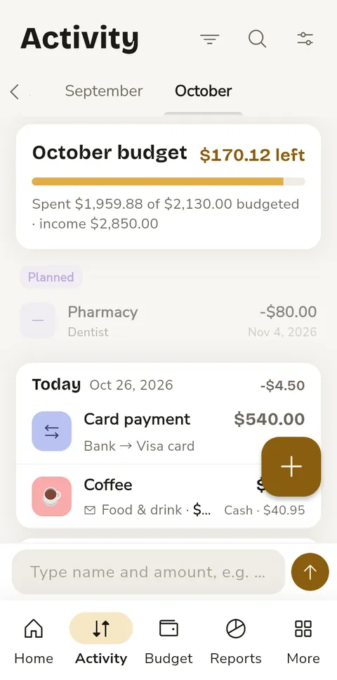
Managing transactions
- Edit — swipe right on a transaction, or tap it and then the edit icon. Receipts stay attached when you edit
- Select — long-press a transaction to select it, then tap others to add them to the selection. With one selected, the pencil edits it
- Details — tap a transaction to see it as a receipt: what it was, when, which account, each item and the total. A stamp shows what it did to your budget — what's left in its envelope now (or how much it's over, with a Cover button), money added to Ready to assign, or "not paid yet" for a planned payment. Long-press the total to copy it. On a shared budget it shows Saved by <name>; entries saved together are listed under Related transactions. Every add, edit and delete is also in Change history
- Delete — swipe left on a transaction, delete it from its detail screen, or select one or more and tap the delete icon. You get a few seconds to tap Undo
- Duplicate — select a single transaction and tap the copy icon (or Duplicate on its detail screen). Splits and transfers are copied with all their lines and accounts
- No rate — an amber tag on a transaction means a foreign-currency amount was saved without an exchange rate, so totals and reports leave it out. Open it and add a rate, or set one in Settings → Exchange rates
- Search — tap the search icon on the Activity tab. Searching (or setting a date range) looks through every month, not just the one open. Every word you type must match (title, note, account or category), in any order; accents and Arabic letter forms don't matter (cafe finds Café, قهوه finds قهوة). Add an amount condition like >50, <20 or =12.5 (e.g. fuel >40). The sort button next to the search box lists the results largest first, each with its date. Largest first is also in the filter panel (the funnel), so you can sort a month without searching
- List settings — the sliders icon on Activity picks a row layout and whether rows show the account label, category icon and time, and whether each day shows its total
- Filter — by type (All/Income/Expense/Transfer), account, category (includes its subcategories), date range, or amount range (
1,200works). Active filters show as chips under the month tabs: tap a chip to remove that filter, or Clear all - See all — on an account or envelope, opens the Activity tab filtered to it across all months
- Bulk changes — select transactions, then ⋮ for Select all, Change category, Change account, Change date or Export CSV. Envelope balances update; transfers only take a new date
- Open from anywhere — tap a row in an envelope's activity, a transaction in a Reports category list, or a donut slice to drill in. The year picker goes back to your first transaction
Envelopes (Budgeting)
Envelopes are the heart of BudgetSeal. They don't move money between accounts — they help you plan how to use the money you already have.
Think of it like putting cash into labeled envelopes: $500 for groceries, $1,200 for rent, $100 for entertainment. When you spend, the money comes out of the right envelope.
Types of envelopes
| Type | Use case | Behavior |
|---|---|---|
| Spending | Groceries, fuel, dining | Set a monthly budget. Resets each period. |
| Rollover | Anything else | Unspent money rolls over to the next period. Set an optional target or leave open. |
| Sinking fund | Yearly bills, school fees, insurance | Saves a little each month for payments on set dates. See Sinking funds. |
Creating an envelope
- Go to the Budget tab
- Tap the + button
- Enter a name and optionally pick an emoji icon
- Choose Spending, Rollover or Sinking fund
- Set a budget amount (spending) or optional target (rollover)
- Pick a currency. If you also spend in a second currency, tap Add a target in another currency — for example Groceries $100 and LBP 2,000,000. Each currency has its own bar, is funded on its own (Fund envelopes shows a row for each) and is never added to the other; the envelope is sealed when both are met
- Link categories — expenses in these categories will automatically debit this envelope
- Tap Create envelope
Envelope settings
Tap an envelope, then the 3-dot menu → Edit settings to change its name and icon, its Purpose (Spending, Rollover or Sinking), budget or target, currency and linked categories. Spending and rollover envelopes also have a Cycle:
- Periodic — resets each period (the default for spending envelopes). Rollover balance carries what's left into the next period; Auto-reset resets it without asking
- Permanent — keeps building up (the default for rollover envelopes)
Tap Save changes when done.
Envelope detail screen
Tap any envelope to see:
- Balance card — how much is available, with a progress bar
- Fund and Spend — Fund adds money from Ready to assign; Spend (spending envelopes) starts an expense in this envelope's category. A sinking fund shows its plan and payments instead
- Recent activity — funded, spent, adjustments, and resets
- Spending history — bars of what you spent in the last 3 months (once there's spending in its categories)
The 3-dot menu also has:
- Move money — move money to another envelope or back to Ready to assign. On an overspent envelope this becomes Cover overspending: take the shortfall from Ready to assign or another envelope
- Withdraw — send money from this envelope back to Ready to assign
- Revalue balances — update exchange rates for foreign-currency balances
- Archive — hide the envelope without deleting history. An archived envelope stops taking spending; to bring it back, open the Budget tab's ⋮ menu → Archived envelopes → Unarchive
- Delete — permanently remove
An overspent envelope shows a red Cover button on its Budget card. After you save an expense, the confirmation says how much is left in its envelope — or how far it went over, with a Cover button.
The magnifier on the Budget tab finds an envelope by name, and ⋮ → How envelopes work explains the basics. When you have goals or loans, a Goals & loans card on the Budget tab opens them.
Seals
BudgetSeal marks finished budgeting with a gold wax seal:
- Fully funded — an envelope with a target gets a seal on its icon once it's fully funded: a spending envelope when this period's funding reaches the target (spending from it afterwards keeps the seal; going below zero takes it away), a rollover envelope when its balance reaches the target
- All sealed — when Ready to assign is at zero, no envelope is overspent and your envelopes hold your money, the gold banner reads All sealed: every bit of your money has a job
- <Month> sealed — in the first week of a new period, the Budget tab sums up the month you just closed: what you spent of what you budgeted. It carries the seal when you stayed within budget; a month that went over is just "<Month> budget", with how much it went over. Tap See the recap for the full close: a dated seal, what you budgeted, spent and kept, which envelopes held and which went over, what happened to the leftovers, and a button to plan the new month. Share recap sends it as a picture
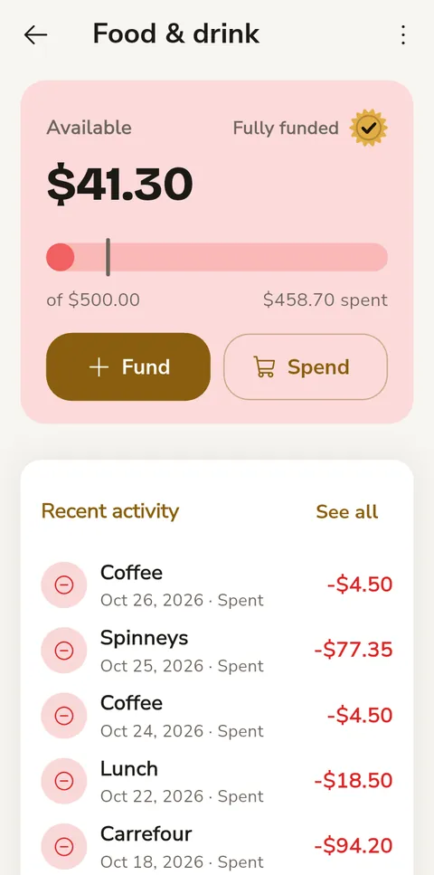
Sinking funds
A sinking fund saves a little every month for payments you know are coming: a yearly subscription, car insurance, or school fees paid in installments. You give it the payments (dates and amounts) and it works out what to put aside each month so each payment is covered on its date.
Creating a sinking fund
- On the Budget tab, tap + and choose Sinking fund
- Name it (for example "School tuition"). If you don't link a category, BudgetSeal creates one with the same name; payments in that category come out of the fund
- The fund opens: tap Add payment for each payment on the schedule
A yearly (or every-3-months) subscription can start one too: on Subscriptions, a card lists the yearly bills nothing is saving for yet, with about what a month takes. Save monthly creates a fund for that bill. The bill keeps posting as usual, now from the fund, and its row shows Saving · $X of $Y (tap it to open the fund).
Payments in two currencies
A payment can have a part in each currency: for example $1,500 from the bank and LBP 45,000,000 in cash. Tap Add another currency on the payment. Each part is saved, planned and paid in its own currency, never converted. The fund tells you what to put aside in each currency.
How the monthly amount works
For each payment ahead, the fund looks at what is still missing up to that payment and spreads it over the months left before it (the month the payment falls in counts). The monthly amount is the smallest one that covers every payment on time. It is worked out again each month from what is saved, so it changes after a payment. The fund screen shows the Monthly plan, for example $500 from November to January, then $333.34 until April.
Payments come from the fund's planned payments, plus any yearly or every-3-months recurring bill in its category. Monthly bills are left out: a normal spending envelope fits them better.
Funding
- Fund this month on the fund screen puts this month's share in, in each currency
- Quick fill on the Fund screen adds each fund's share too, in its own Sinking funds group. When money is short, spending envelopes are filled first, then sinking funds, soonest payment first
- The Budget tab lists sinking funds in their own section: what is saved toward the next payment in each currency, and what this month takes
When a fund falls behind
If a month is missed, the fund is behind its plan. You can catch up two ways:
- Spread it out: smaller steps; the monthly amount goes up until the payment
- Top up now: put the shortfall in now; the monthly amount stays steady
The fund asks each time, unless you tick Always do this for this fund or set When behind on the fund screen.
Copy from last year
Fees often change every year. When the new schedule is decided (the school announces its fees, the insurer sends the renewal), open the fund and tap Copy from last year: last year's payments come back one year later. Untick the ones you don't need, raise the amounts by a percentage per currency if everything went up, and add them. Each payment stays editable until it's paid, so you can set the exact new amounts. Nothing is copied on its own.
Categories
Categories organize your transactions. BudgetSeal uses a two-level system: parent categories (groups) and subcategories.
For example: Food & Dining (parent) → Groceries, Restaurants, Coffee & Snacks (subcategories).
Managing categories
- Go to More → Categories
- Tap the + button to add a new category
- Enter a name, choose a parent (or make it top-level), pick an emoji icon and color
- Set it as Expense or Income type, then tap Create
Linking to envelopes
Categories become powerful when linked to envelopes. When you spend on "Groceries" and that category is linked to your "Food" envelope, the expense automatically debits the envelope. Linking a parent category covers its subcategories too: if "Transport" is linked, spending on Fuel or Parking comes out of that envelope (unless a subcategory is linked to a different envelope).
Link categories when creating or editing an envelope (see Envelopes), or from the category side: long-press a category → Envelope to pick an envelope, unlink it, or create a new envelope named after the category. Linked categories show their envelope's name under them.
Category icons
Tap the icon to pick from about 130 emojis in groups (food, transport, home…). The same picker is used for envelopes, and the emoji shows on transactions and category lists.
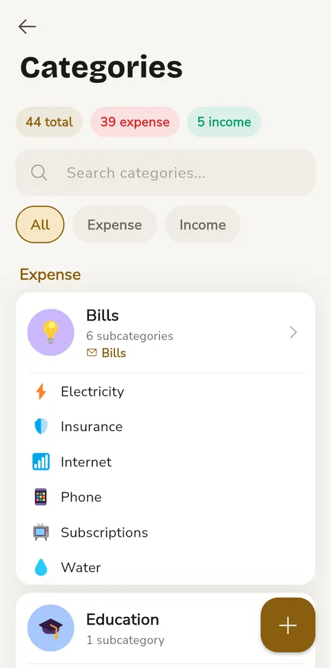
Funding envelopes
When you receive income, it goes to Ready to assign — money no envelope holds yet. The goal is to give all of it a job.
The gold Ready to assign banner at the top of the Budget tab shows it — tap Assign to fund envelopes. It shows your base currency amount prominently. If you have unallocated funds in other currencies, you'll see a "+ N other currencies" link — tap it (or the arrow) to expand and see the breakdown per currency.
Funding from Home
- Tap the Fund quick action on the Home tab (it appears once you have an envelope), or Assign on Ready to assign
- Fund envelopes lists all your envelopes with their current balances
- Enter how much to assign to each envelope — or use a preset: Quick fill (up to each target), Same as last period, What I spent last period, Average spending (your average over the last 3 months), or Clear. Each envelope also shows Usually spends $X a month — tap it to use that amount. Fully funded envelopes still take extra money
- Tap Fund all (it shows the total) to confirm — all envelopes are funded together, or none if something fails
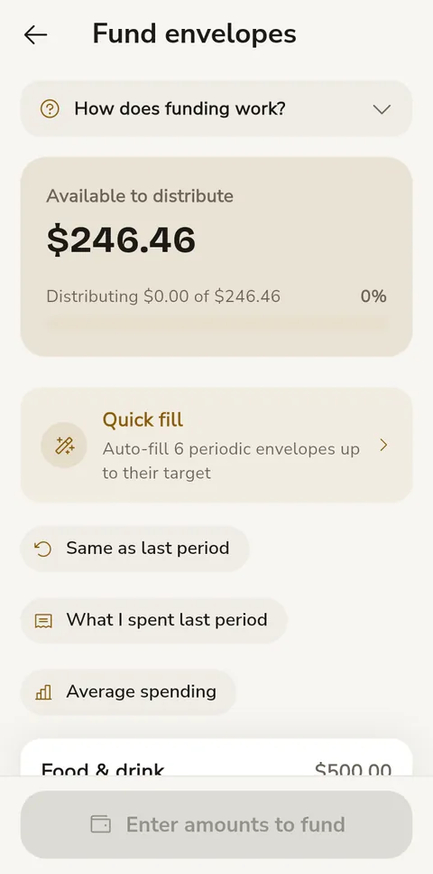
Reading the Budget tab
- Under Ready to assign, one line sums up the month: what you budgeted, what you spent, and how many days are left
- Needs attention — overspent envelopes are gathered at the top in a red card, each with Cover to move money in
- The rest sit in one card per section. Each row shows what's left, a thin bar of what you've used, and "$36 spent of $100" (or "N% saved" for a rollover envelope with a target). The bar turns amber when less than a tenth is left
- Tap a row to open the envelope; its Spend button adds an expense from it
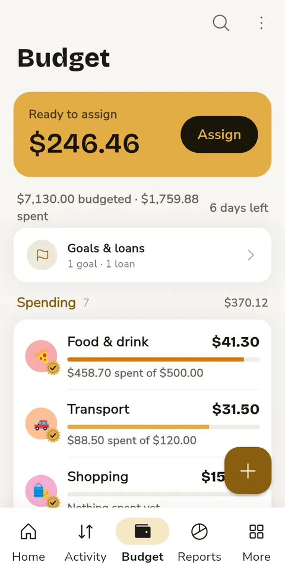
Funding a single envelope
- Go to the Budget tab
- Tap an envelope to open its detail screen
- Tap the Fund button on the balance card
- Enter the amount (or tap To target / All available) and tap Fund
Ordering envelopes
Budget tab → ⋮ → Reorder envelopes: drag the handles to set the order the Budget tab and the funding screen use.
Period transitions
At the start of each budget period (based on your period start day), periodic envelopes can be reset. You choose what happens to leftover balances:
- Return to unallocated — the leftover goes back to Ready to assign
- Carry forward — keep the balance for the next period
- Move to... — transfer the leftover to another envelope (e.g., savings)
An overspent envelope (below zero) can be covered from Ready to assign so it starts the new period at zero, or carry the overspending forward.
During the first week of a new period, the Budget tab sums up the last one (see Seals); its Fund this period button opens funding. Close it with ×.
Envelopes with Auto-reset enabled handle this automatically. Others will trigger a banner on the Budget tab showing exactly how many envelopes need your review (e.g., "3 envelopes need reset"). Tap Review to choose, for each one, whether its leftover returns to Ready to assign, moves to another envelope, or stays. Once reviewed, the banner goes away until the next period starts; envelopes created during the period are not asked about until it ends.
Recurring transactions
Set up transactions that repeat on a schedule — rent, salary, utility bills, etc.
Creating a recurring transaction
- Go to More → Recurring & bills
- Tap the + button
- Fill in the title, amount, account and category (Expense or Income)
- Set the frequency: weekly, monthly or yearly
- Pick a start date and, if it stops, an end date
- Optionally turn on This is a subscription (it's then tracked under Subscriptions) or Ask before posting, or change Remind me
- Tap Create
Recurring transactions are auto-posted when they're due — when the app opens and whenever you come back to it. A message tells you how many were posted. The top of the screen shows the monthly total and how many are active or paused; pause or resume one with the pause button on its row. To delete one, tap it and choose Delete under Save.
Calendar
Go to More → Calendar (or the calendar button on Recurring & bills) to see your month as a grid. Each day with transactions is colored by its total: green when more came in than went out, red when you spent more, with the amount under the date. Today and the days ahead show the bills due, in blue. Tap a day to see its transactions and bills — tap a bill to open Upcoming bills, where you can pay or skip it. To add a transaction on a past day, use Add on this day under the list, or double-tap the day.
Upcoming bills
Tap Upcoming or Overdue on the Home tab (or a bill in the Calendar, or long-press the app icon → Upcoming bills) to see all bills sorted by due date with urgency indicators:
- Indigo — Overdue
- Blue — Due today, tomorrow, or in a few days
Tap a bill to Post now (pay it early — it's recorded today and the next date moves on), Paid on another day (you paid it on a different day — pick the date; an overdue bill starts on its due date), Skip this one (move to the next date without recording it), or Edit it. Subscriptions show the price that will actually be charged, including scheduled price changes.
Bills that change every time (electricity, generator, a top-up): turn on Ask before posting when you add or edit the bill. When it's due it isn't recorded on its own — it shows Confirm the amount; tap it, choose Confirm amount and post, and the calculator opens with the bill's name for what you actually paid. The bill keeps its usual amount for next time.
Reminders: each bill reminds you on its own — 2 days before by default. Change it per bill with Remind me (on the day, 1, 3 or 7 days before, or not at all). The reminder has two buttons: Log it opens the bill so you can post it, and Remind me tomorrow brings it back a day later.
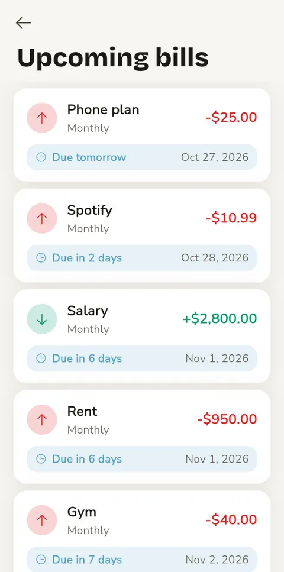
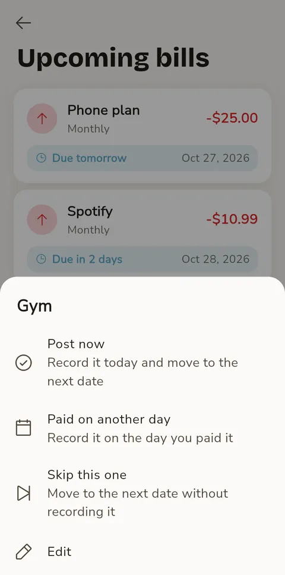
Subscriptions
Subscriptions are recurring transactions with extra tracking — price history, annual cost, and cancellation dates.
Creating a subscription
- Go to More → Subscriptions
- Tap the + button — a "New subscription" form opens directly
- Enter the service name, amount, frequency (weekly/monthly/yearly), and account
- Optionally set a start date and end date
- Tap Create
Subscription detail
Tap a subscription to see:
- Annual cost — calculated from the frequency and amount
- Price history — a timeline of price changes (logged automatically when you edit the amount)
- Past transactions — all payments made
- Upcoming — next scheduled payment
From the detail screen you can Pause it (it shows as Paused and stops billing until you resume it), set a cancellation date (it shows as Cancelled once that date has passed), or Delete it with the trash button — the payments it already recorded stay in your history.
Planned payments
Plan future one-time payments without affecting your current balances. Use this to prepare for next month's known expenses — rent, insurance, large purchases — so you can see what's coming before committing.
Creating a planned payment
- Go to More → Planned payments
- Tap the + button
- Select the type (Expense, Income, or Transfer)
- Enter the amount, account, and category
- Choose the target month — defaults to next month
- Optionally pick an exact date within that month
- Tap Plan payment
How planned payments work
- No balance impact — planned payments don't affect account balances, envelope balances, or reports until posted
- Envelope preview — the Budget tab shows "$X planned" on envelopes that have planned expenses linked to their categories
- Transaction list — planned payments appear dimmed at the top of the transaction list with a "Planned" badge, separate from real transactions
Posting (confirming) a payment
When you're ready to make the payment real:
- Single — swipe right on a planned payment (Post)
- Bulk — tap Post all on a month header to post all planned payments for that month at once (it asks first)
Posting creates a real transaction through the budgeting engine — envelope balances update, account balances change, and it appears in reports. It's dated on the planned date, or today if you post it early. Each plan is posted only once, even if you tap twice or post it on two synced devices.
Editing & deleting
- Edit — tap a planned payment to modify the amount, category, date, or other details. One in two currencies opens with both parts
- Delete — swipe left to remove a planned payment you no longer need
Templates
Templates save frequent transactions for one-tap reuse. Instead of filling in "Morning coffee, $4.50, Cash, Coffee & Snacks" every day, save it as a template.
Creating a template
- Open Templates from View all next to Quick templates on Home, or from ⚡ → Manage templates in the add form
- Tap the + button
- Enter the transaction details: title, type, amount, account, category
- Tap Save template
Or open a transaction and choose ⋮ → Save as template.
Using a template
- From the Templates screen — tap a template to open a new transaction filled in from it (long-press for Use template, Edit or Delete). A template in another currency gets the current exchange rate
- From the Home tab — your 3 most-used templates appear under Quick templates; tap one to use it
- When adding a transaction — tap ⚡ at the top of the form: a list of your templates opens (most used first), and picking one fills the form without leaving it. Manage templates at the bottom opens the Templates screen
Templates can be sorted by most used, A-Z, newest, or highest amount. You can also group them by type or category.
Goals & loans
Track savings goals and money you've lent or borrowed — separate from your envelope budgeting.
Goals
A goal is a savings target: emergency fund, vacation, new laptop, etc.
- Go to More → Goals & loans (also accessible from the Budget tab if you have existing goals)
- Tap the round + button and pick Goal
- Enter a name, target amount, currency, and optional deadline
- Tap Save
To fund a goal:
- Open the goal — you'll see a progress card with the current amount and a progress bar
- Tap Add funds (with a deadline, the summary shows how much you need each month to make it)
- Choose the account to save from
- Optionally pick a category for the transaction
- Enter the amount and confirm
- A real transaction is created — it appears in your transaction history
The detail screen shows a summary card (currency, deadline, remaining) and a payment history listing all recorded transactions. Payments are linked to the goal by an internal ID, so renaming the goal won't break the history. The progress is the total of these payments, so deleting a payment lowers it again. To edit the goal's settings, tap the 3-dot menu → Edit settings.
Loans
Track money you've lent to someone or borrowed from someone.
- Tap the round + button and pick Loan
- Enter the loan name, person, amount, and direction (I lent or I borrowed) — a hint below explains what each direction means
- Tap Save
To record payments:
- Open the loan
- Tap Record payment
- Select the account, optionally a category, and enter the amount
- The payment appears in the payment history below
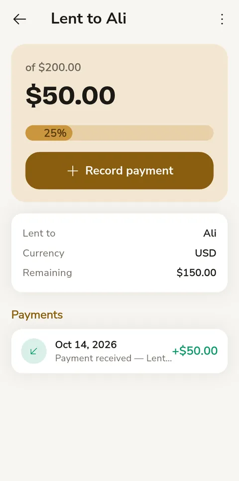
Travel exchange
Going on a trip and need to exchange currency? BudgetSeal creates a temporary travel wallet to track your spending abroad.
Exchanging money
- Go to More → Travel exchange
- Select the account you're exchanging from
- Enter how much you're exchanging
- Choose the travel currency (the currency of your destination). Every world currency is listed; the one you're exchanging from isn't offered
- Enter how much you received in the foreign currency
- Tap Exchange & create travel wallet
A travel wallet account is created automatically. Use it to track your spending during the trip. Exchange more cash during the trip the same way — it's added to the wallet you already have (the button then reads Exchange & add to wallet). If you exchange more than the account holds, BudgetSeal warns you first.
Coming back
When you return and have leftover money:
- Go to Accounts → open the travel wallet
- Tap Convert back & close (on the wallet's page, or in its 3-dot menu)
- Enter how much you got back (filled in for you when the account uses the wallet's currency)
- The whole balance moves back and the travel wallet is archived. If the balance changed in the meantime (for example after a sync), nothing happens and you'll see the new amount to check
Bill splitter
Split a restaurant bill, shared groceries, or any group expense — everything on one screen. Open it from More → Bill splitter, Split on Home, or by long-pressing + on Activity → Split a bill.
Quick split (most bills)
- Bill total — tap the amount and type the bill with the calculator. The currency is beside it; for another currency, the rate shows under the total
- Tip — None, 10%, 15% or a custom amount. Tap + Tax or service charge only if the bill adds one (a percentage or an amount)
- Who's in — tap Add for each person; people from earlier splits and loans appear under Recent. Everyone's share updates as you go
- Someone paying more or less? Tap their amount and type it — the others share the rest. Tap a person for Set share, Split it evenly again or Remove
- Tap See totals: a page with what each person pays (with a tip, also what they pay before it and their part of the tip — the bill shows its total before tip, the tip and any tax), who owes whom, Paid by, From (account and category), Share and Save. Edit split (or Back) takes you back to change anything
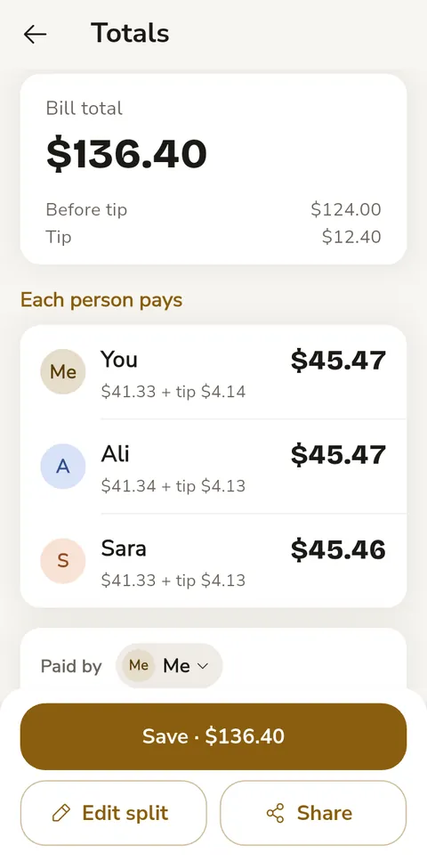
By item
Switch Evenly to By item when people had different things. Every item starts as shared by everyone. Tap a person at the bottom, then tap the items they had (or didn't) — a check shows who has each item, and every share updates live. Tap Done when finished with that person; long-press a person for Set share or Remove (items only they had go back to everyone, with Undo). In By item the total is the items added up. Tap an item to rename it, change its amount or quantity (the amount is for all of them), or delete it. An item with a quantity ("Argentinian filet ×3") has a Split into 3 button on its row: it becomes three items so each one can go to whoever had it. Without splitting, the whole line is shared equally by everyone ticked on it, whatever the quantity.
A percentage tip and tax or service are split in proportion to what each person had; a custom tip is split evenly. Shares are rounded so they add up to the bill exactly.
Who paid?
- You — the whole bill is recorded from your account: your share in the category you chose plus one line per person ("Ali's part"). Each person gets a loan in Goals & loans for what they owe you
- Someone else — nothing leaves your account now. A loan for what you owe them is added to Goals & loans; recording your repayment there logs the expense
- Each their own — only your share is recorded
After saving, a summary shows who owes what. When you paid, send one person their share with the share button beside them; Share sends everyone's and Done closes. Undo removes the payment and the loans together and brings the bill back so you can fix it. Leaving with a bill entered asks Discard this bill? first.
Receipt scanning
- Tap the camera at the top. On Android a document scanner finds the receipt's edges and straightens it (you can pick a photo from your gallery there too); hold the receipt flat and fill the frame for the best read
- The app reads the receipt offline — no internet needed. It reads receipts printed in Latin letters (English, French and others); Arabic text can't be read yet
- The items go straight into By item. Quantities are read too ("3 x 150,000", "2 @ 4.50"). Discounts become negative amounts; tax, service, total and payment lines aren't added as items, and nor are phone, order, check, table or reference numbers. Wines listed by vintage ("1 2014 2,700,000") become an item named after the year
- The app compares the items with the receipt's total and tells you if something is missing. Lines it read without a price are listed under the items — tap one to add it with its amount. If the receipt lists tax or service separately and the numbers add up, it's filled in for you
- If the receipt is in another of your currencies, the app notices: when the receipt names it ("LBP", "ل.ل", "€") the bill switches to it — tap Undo if that's wrong; when it only looks like it (prices in whole thousands, for example), a Looks like LBP — switch? line appears under the total. Only currencies of your accounts are suggested
Reports
The Reports tab starts with the period: Month, 3 months, 6 months, 12 months, This year or Custom… (pick a first and last month). Every report you open uses the same period, and compares it with the same length of time just before it — except the one-month reports (Month overview, By category, Month insights), which have their own month arrows, and Balance sheet, which compares with a date.
Under the period, a few plain sentences say how it went — how much of what you earned you kept, which category took the most, and whether spending went up or down — with Earned, Spent and Kept and their change. Then the reports, in four groups:
- Budget — Budget vs actual: for all envelopes or one, each month's spending against what the envelope had to spend (red when it went over), and every envelope's track record — a dot per month: held, went over, or not used. Month insights: pace, savings rate, age of money and tips for one month
- Spending — Spending over time: each month stacked by its top categories, then every category's monthly average, trend line and how the last month compares. By category: one month's donut and top spending. Places and patterns: where you spend most (by transaction title, with visits and the average each time), which weekday costs the most, your busiest time of day and your no-spend days. Biggest expenses. Month overview: one month against your usual, daily pace and spending activity
- Money — Income vs spending: income and spending side by side each month with what you kept, then net worth over time (accounts in your main currency; others are left out, never converted). Balance sheet. Accounts: money in and out of each account. Currencies: spending in each currency
- Commitments — Subscriptions and bills: what your recurring payments cost a month and a year. Goals and loans opens your goals and loans
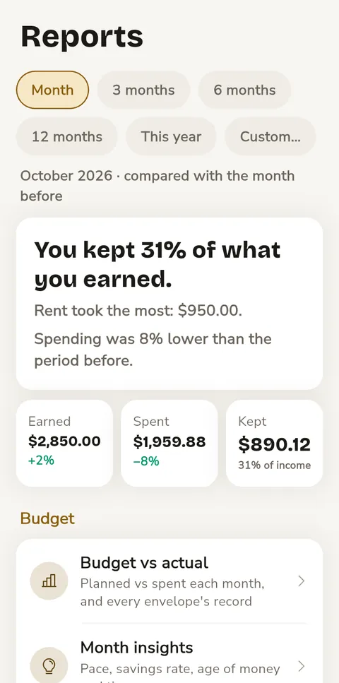
<Year> in review, at the bottom, sums up your year so far — what you kept, months sealed, your most reliable envelope, biggest category, favourite place, best month and no-spend days — and shares it as a picture.
If your budget period doesn't start on the 1st, the calendar icon next to the title switches reports between Calendar months and Budget periods (e.g. 25 Sep – 24 Oct).
Four reports cover one month at a time. Open them from the list, then use the arrows at the top (or swipe) to change the month:
Month overview
- Monthly summary — income, expenses, and net for the selected month
- Spending activity — a grid of this year, one square per day: red for spending, green for income, gray for none; darker means more. Scroll left for earlier months
- 6-month trend / Daily pace — switch the chart between income vs expenses over 6 months and this month's spending so far against a typical month
By category
- Donut chart — the month's spending split by category, with the total in the middle
- Category list — each category's amount, its share of the month (bar and %), number of transactions, and the change versus last month
- Top spending / Top transactions — sort the list by amount or by number of transactions
- Tap any category to see its transactions
Month insights
- Spending velocity — your daily rate, projected total, and whether you're on pace
- Biggest expense — your largest single expense this month
- Savings rate — what percentage of income you're saving
- Age of money — how long money sits before being spent (see Age of money)
- Recurring transactions — how many are active and what they cost a month
- Tips — suggestions based on your pace, savings rate and age of money
Balance sheet
- Net worth — your main-currency accounts added up; accounts in other currencies get their own totals, never converted
- Assets — bank accounts, cash, digital wallets
- Liabilities — credit cards
- Compare — tap the date chip (End of last month) to compare with the end of last week, month, quarter or year, the same time last month or year, or a date you pick
Export report
Generate a printable HTML report for any month:
- Go to More → Settings → Import & export → Export report
- Pick the month with the arrows
- Tap Generate & share
- Open the HTML file in a browser, then use Print → Save as PDF
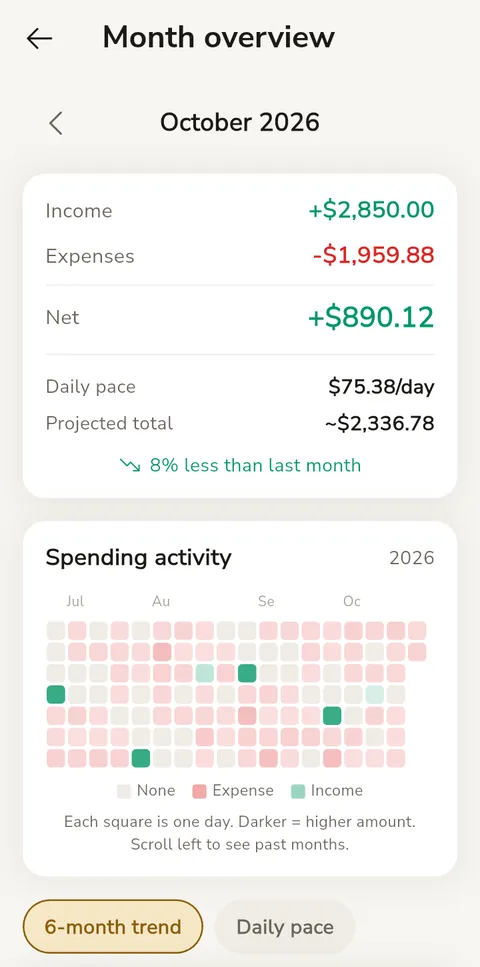
Age of money
Age of money tells you how many days your money sits in your accounts before you spend it. It replays all your income and expenses in order: each expense spends the oldest money still left (your accounts' opening balances count as the oldest), and the number shown is the average age of your last 10 expenses.
- Under 15 days — Needs work: you're living paycheck to paycheck
- 15–29 days — Getting there: you have a small cushion
- 30 days or more — Excellent: you're spending last month's income
The goal is 30+ days.
Your Age of Money is in Reports → Month insights, once you have enough income and expenses recorded.
Change history
More → Settings → Change history lists the last 300 changes to your transactions, newest first, by day: what was added, edited, deleted or restored (Undo), at what time, and — when it's for another day — which day it's dated. An edit lists what it changed (Amount: $10.00 → $12.00, Category: Food → Home, the account, date or note). Bills posted by a recurring item and entries made in the Web Companion say so. Tap an entry to open it; deleted ones are crossed out and can't be opened. In a shared budget each entry says who made the change (Edited 14:02 · by Sara) — see Sharing a household. If two phones changed the same thing before syncing, the later change is the one kept and both stay in the history; the earlier one says Replaced by Sara's later edit. The Web Companion's History shows the same list. Purging deleted transactions in Health check also clears them from the history.
Crash reports
If BudgetSeal hits an error, it can keep a note of what went wrong so it can be fixed. This is off until you turn it on in More → Settings → Crash reports, and nothing is ever sent by itself: the reports stay on your phone.
- What a report holds — the error, where in the app it happened, the app version and your phone's system version. It doesn't include your budget, but an error can quote something that was on screen, so read a report before you share it (tap one to see all of it).
- Share opens your phone's share menu, so you choose where they go — an email to the developer, a message, a note.
- The last 50 are kept; the same error twice in a row is counted, not saved again. Clear deletes them, and turning crash reports off deletes them too.
Health check
A diagnostic tool that verifies your data is consistent.
- Go to More → Settings → Health check
- The app checks that your accounts add up to Ready to assign plus your envelopes, each account's and envelope's balance, and data quality (orphan entries, deleted transactions, last backup)
- If issues are found, tap Repair balances to fix them
- If there are deleted transactions, Purge N deleted transactions removes them for good
- The share button exports a diagnostic report; the refresh button runs the check again
Cloud sync
Sync your data to the cloud so you have a backup or can share with a partner. BudgetSeal keeps everything in one folder — no server, no account registration. Each phone writes its own changes there, so two phones never overwrite each other.
Setting up sync
- Go to More → Settings → Cloud sync
- Choose a provider:
- Google Drive — sign in with your Google account
- Folder — your phone's file picker opens: choose a folder on your phone, or one that an app like Dropbox or OneDrive keeps in sync. If you used to sync to a single file, Cloud sync asks you once to pick a folder instead
- Tap to connect — the app syncs right away: it starts the sync folder, or brings in what's already there. If the folder holds a budget made on another device, the app asks whether to use it on this device (your current data is backed up first) or disconnect. The Cloud sync row in Settings then shows when you last synced (or that the last sync failed)
Once connected, the app syncs automatically when you open or close it. You can also tap Sync now anytime, or Disconnect to stop syncing (your data stays on this phone).
Sync receipts (in Settings, once sync is on) uploads your receipt photos with the sync; with it off, receipts stay on this phone. Only Google Drive syncs receipts for now.
Changes made on two phones merge field by field: if you rename an account while your partner archives it, both happen. If you both change the same thing, the later change wins. A phone that was offline for days catches up the same way. A recurring bill that comes due on both phones before they sync is posted only once. Using the budget from the sync folder first saves a copy of your current data, which you'll find under Backup & restore.
The folder also holds BudgetSeal_Sync.json, a readable copy of your whole budget refreshed once a day (see Can I read my data without BudgetSeal?).
Sync encryption
For extra security, encrypt your sync file with a password:
- On the Cloud sync screen, find the Sync encryption card
- Tap Enable
- Enter a strong password and confirm it
- The next sync will encrypt the file with AES-256
To turn encryption off, tap Remove on the same card and confirm Remove encryption? Your other devices need to remove their password too.
Sharing a household
Share your BudgetSeal data with a partner:
- Connect Cloud sync with Google Drive (sharing needs Drive)
- Tap Share household — on the Cloud sync screen or in Settings
- Enter their email and tap Generate invite code: this shares your BudgetSeal folder on Drive with them
- Tap Share code to send it. They choose Join a household during setup and enter it
Who added what. Once a budget is shared, each phone asks once for a name (Who's using this phone?) — choose Just me if it's only you. After that, Change history says who added, edited or deleted each entry (Added 14:02 · by Sara), and a transaction's page shows Saved by Sara. Change your name in Settings → Your name (under Data; it shows once your budget syncs). Entries from before names, bills that post by themselves and entries made in the Web Companion don't name anyone. A budget used by one person never shows names.
Backup & restore
Automatic backups
- Go to More → Settings → Backup & restore
- Enable Automatic backups
- Set the frequency (every 6 hours to weekly)
- Set retention (how many backups to keep, 3 to 30)
Backups are saved locally on your device and run automatically when you open or close the app (if the frequency interval has passed). You can see all backups at the bottom of the screen and restore or delete any of them.
Manual backup
Tap Export & share to create a backup file and share it via any app (email, messaging, etc.).
Restoring
- From a local backup — tap the restore icon next to any backup in the list
- From a file — tap Restore from file and pick a .db file
- On a new phone — during setup, choose Restore my budget → Restore a backup file and pick the .db file
The restored data takes over the next time the app starts. On Android, tap Close app and open it again; on iPhone, close the app from the app switcher and reopen it. Sync and automatic backups pause until then, so your old data is never uploaded over the restored one.
If you haven't backed up in two weeks, the More tab shows a reminder with Backup now.
Web Companion
Turn your phone into a local server and manage your budget from a laptop browser. Useful for fast data entry with a real keyboard.
How it works
Your phone serves a web page over your local WiFi network. No internet needed — both devices just need to be on the same WiFi.
Starting the server
- Go to More → Web Companion
- Set a 4-digit PIN (required for security)
- Tap Start server
- A URL appears (e.g.,
http://192.168.1.5:7432) - Open that URL on your laptop browser, or scan the QR code
- Enter the PIN on the web page
What you can do on the web
The web page looks like the app — same colors (including the accent you picked), category icons, language and number format as your phone. Arabic shows right to left.
- Home — budget first, as on the phone: the Get started checklist while you set up, Ready to assign (it turns into All sealed when every bit of money has a job), overspent envelopes with Cover, bills due this week, then your envelopes, the latest transactions and your accounts
- Transactions — the same list as the app: the month's budget on top (what's left, spent and income; a past month within budget shows as “sealed”), one card per day with its net, and under each transaction what it did to your budget (the envelope and what was left in it, “over by” with Cover on the envelope's latest expense, Not budgeted, or → Ready to assign) and the account's balance right after it. Search works as on the phone (accents and Arabic letter forms ignored, amount conditions like >50), filter by type and month, load more. History shows the same change history as the app. Click a row to edit it (including switching between expense, income and transfer); the row buttons duplicate or delete it, and a deleted transaction can be brought back with Undo for 5 seconds. Save & add another keeps the account and date for fast entry. Items of a split transaction are edited on the phone.
- Add several — on the Transactions page, a grid for typing many expenses and incomes in one go: Tab moves across, Enter goes down a row (a new row copies the date, type and account above), Ctrl+Enter saves. Paste rows straight from a spreadsheet or bank statement — dates, amounts (a minus sign means an expense), category and account names are recognised, the rest becomes the title. Everything is saved together; if one row has a problem it's highlighted and nothing is saved until it's fixed. The draft stays if you switch pages.
- Import CSV — on the Transactions page: choose or drop a bank statement (commas, semicolons or tabs). The columns are recognised for you — date, description, a signed amount or separate money-out / money-in columns, category — and you can change any of them; a preview shows how the rows will look. Check & import first tells you how many are new, how many got a category (matched by name or guessed from your past titles) and how many are already in BudgetSeal (same account, day, amount and type — those are skipped, so importing an overlapping statement is safe).
- Transfers between currencies — enter the amount sent and the amount received; the rate is worked out for you
- Other currencies — an expense in a currency other than your base one can take a rate; leave it empty to use the latest rate your phone knows
- Budget — every envelope with what's left, spent and its target (a fully funded envelope wears the wax seal); fund one with To target, All available or Usually spends (its average over the last 3 months). Funding more than you have ready to assign asks you to confirm. Sinking funds are listed on their own with what this month takes: Fund this month (or Catch up when behind), and Schedule to see the plan, add or edit payments, copy last year's and choose what happens when a fund falls behind. The ⇄ button on a card moves money to another envelope or back to Ready to assign; an overspent envelope shows a red Cover button that fills in the overspent amount and takes it from Ready to assign (or from the envelope with the most money when Ready to assign is empty). An envelope can only give what it holds.
- Upcoming — every recurring bill and subscription due in the next 7, 30 or 90 days, grouped by day (overdue ones in blue), with what goes out and comes in. Click the next one to Post now (recorded today) or Skip this one; either way its next date moves on. A bill set to Ask before posting shows an amount field first (and "confirm the amount" once it's due); the recurring form has the same Ask before posting and Remind me settings as the app. Below, your planned payments by month: plan a new one, click one to post it (on its planned date, or today if that's still ahead) or edit/delete it, or Post all for a month. Planned payments don't touch your balances until they're posted.
- Goals & loans — every goal with what's saved, what's left and how much a month keeps you on track; loans show what's still owed to you or by you. Add funds or record a payment (it becomes a real transaction from or into the account you pick, converted at your phone's latest rate if the account uses another currency). Click a card for its payment history, to edit it, or to delete it — with payments, you choose whether they are deleted too.
- Reports — browse months with the arrows: totals, savings rate, day-by-day chart, spending and income by category, biggest expenses
- Accounts — net worth per currency; add an account (a negative balance for a card you owe on). Click an account for its own page: each transaction shows what it did to the account and the balance right after it. Reconcile asks for the balance your bank shows; if it differs, a “Balance adjustment” is recorded so they match, and the date is remembered (the phone shows it too). Edit changes the name, type, starting balance and decimal places, or archives the account — only at a zero balance, since archived accounts stop counting toward your money. Archived accounts are listed at the bottom of the Accounts page with Unarchive.
- Categories — add, edit, recolor, or move a category inside another one
- Recurring & Subscriptions — add (including recurring transfers), edit the amount, account, category, schedule and next date, pause or delete. Subscriptions show what they cost per month and per year; a price change goes into the price history.
- Export transactions, recurring items or subscriptions as CSV (opens in Excel, accents and Arabic included)
- Switch between light, dark and automatic mode
The page stays live: anything changed on the phone (or in another browser) shows up within a moment, without reloading. It waits while a dialog is open or you're typing, and catches up as soon as you're done. If the phone goes out of reach, a banner tells you; the page reconnects by itself.
The page needs no internet: fonts, icons and charts all come from your phone.
Security
- PIN is required — the page shows how many tries are left; 5 failed attempts lock the interface for 30 minutes
- Only devices on the same WiFi network can connect
- It only starts on WiFi (not mobile data), and stops by itself about 20 seconds after your phone leaves the WiFi
- While the server runs, the phone shows how many browsers have the page open (a green dot when at least one does). Sign out all ends every browser session at once — open pages go straight back to the PIN screen. Changing the PIN does the same.
- Server stops automatically after 6 hours
- On Android, the server runs in the background (you can lock your phone)
- On iOS, keep the app in the foreground — iOS doesn't allow background servers
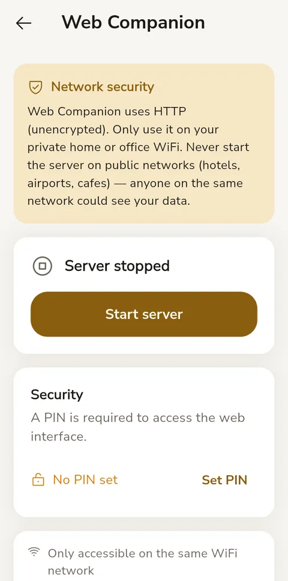
Biometric lock
Protect your app with fingerprint, face recognition, or device PIN.
- Go to More → Settings → Biometric lock
- Toggle it on
- The app will now require authentication every time you open it or switch back to it
Appearance
Customize how BudgetSeal looks. All options are in More → Settings. Type in Search settings at the top to find any option — only the matching rows stay on screen.
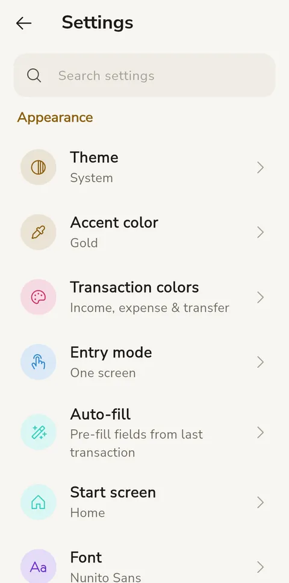
| Setting | Options |
|---|---|
| Theme | System (follows your device), Light, Dark, Black (AMOLED) |
| Accent color | Gold (default), Wax red, Copper, Sage, Teal, Sapphire, Plum or Rose — each color has a bright tone for dark mode and a deeper one for light mode, so text stays readable in both. Or System (Material You on Android 12+). |
| Font | Nunito Sans (default), Plus Jakarta Sans, DM Sans, Inter, Poppins, Nunito, Rubik, Space Grotesk |
| Text size | Small, Default, Large, Extra large |
| Transaction colors | Colors for income, expense and transfer amounts — green and red by default. Your choice applies everywhere amounts are colored: Activity, Home, Reports, accounts, bills and the calendar |
| Entry mode | One screen (amount first, shows your envelope before saving), Assisted (step-by-step) or Classic (single form) |
| Language | System, English, العربية or Français |
| Arabic-Indic numerals | In Arabic, show ٠١٢٣ instead of 0123 |
| Auto-fill | What picking a category fills in from its last transaction (see Auto-fill) |
| Start screen | Which tab opens when you launch the app |
| Transaction list | Layout style, date banner totals, account labels, category icons, time display |
Preferences
| Setting | What it controls |
|---|---|
| Household name | Rename your budget household |
| Base currency | Your primary currency for all totals and summaries. Changing it later asks for the rate to count past amounts at (see the FAQ) |
| Exchange rates | Rates for every currency your accounts and recurring items use. Tap refresh for the latest live rates. Tap a currency to choose which rate the app uses for it (for new transactions, balance adjustments, imports and bills): the live rate, the last rate you got — saved each time you exchange money between your accounts or pay with change in another currency, handy where the street rate differs from the official one — or your fixed rate. On a shared budget everyone uses the same choice |
| Period start day | When your monthly budget cycle starts |
| Currency symbols | Override the default symbol for any currency (e.g., show "L.L." instead of "LBP"). By default, currencies whose symbol is written in Arabic (Lebanese pound, UAE dirham, Saudi riyal) show their code — "LBP 1,200,000" — unless the app is in Arabic, where they show ل.ل, د.إ and ﷼ |
| Number format | Thousands separator (comma/period/space/none), decimal separator (period/comma), negative format (-100 or (100)) |
| Date format | How dates are displayed throughout the app |
All format changes apply instantly — no restart needed.
Reset everything, at the bottom of Settings, erases all data on this phone and starts setup again.
Import & export
Go to More → Settings → Import & export.
Import CSV
Import transactions from a bank CSV file. The app guides you through mapping columns to BudgetSeal fields. Dates can be 2026-03-04 or slash style (04/03/2026); the app works out day/month order from the whole file. Amounts can use either convention (1,234.56, 1.234,56, 12,50), and (5.00) counts as negative. Rows with an unreadable date or amount are skipped and counted, never dated today. Importing into a foreign-currency account uses its current exchange rate. Banks that split money in and out can map Debit and Credit columns instead of one Amount. Rows already in the app (same account, day, amount and type) are skipped, so overlapping statements don't double up, and rows without a category get one from past transactions with a matching title. Imported expenses in a category linked to an envelope spend from that envelope, just like manual entries.
Export CSV
Export your transactions as a CSV spreadsheet for Excel, Google Sheets, etc. — everything, or narrow it to a period (this month, last month, this year or your own dates), one account, or one category (with its subcategories). The screen shows how many transactions will be exported. Each row is one line of a transaction, in that line's own currency.
Export report
Generate a formatted HTML report for a selected month. Open in a browser and print to PDF.
Keyboard shortcuts (Web Companion)
When using the Web Companion in a browser, these keyboard shortcuts are available:
| Shortcut | Action |
|---|---|
| N | New transaction |
| / | Search transactions |
| R | Reload from the phone |
| 1–9 | Go to one of the first nine pages in the menu |
| Enter | Save the open form, or open the selected row |
| Ctrl + Enter | Save all rows in Add several |
| Esc | Close the dialog |
| ? | Show this list |
Frequently asked questions
What's the difference between accounts and envelopes?
Accounts are where your money physically is (bank, wallet, credit card). Envelopes are how you plan to use it. You might have $5,000 across two bank accounts, but envelopes decide: $2,000 for rent, $500 for groceries, $300 for entertainment, and $2,200 ready to assign.
What does "Ready to assign" mean?
It's money in your accounts that no envelope holds yet. Income goes to Ready to assign; give it to envelopes until every bit has a job — the banner then reads All sealed. (Health check calls the same money "Unallocated".)
Can I use multiple currencies?
Yes. Each account has its own currency. When you transfer between accounts in different currencies, an exchange rate field appears. Exchange rates are fetched automatically and cached for one hour; you can also set your own rate in Settings → Exchange rates. Reports and summaries show totals per currency — they're never mixed.
Paying in another currency: you can enter an expense in a different currency from the account (say €50 on a dollar card). It's saved in the account's currency using the rate you enter (or the latest known rate), and the original €50 is kept in the item's note — so account balances always stay in one currency. If no rate is known at all, the app asks you to enter one.
Envelopes and other currencies: spending is taken from the envelope in the currency you actually paid in. If a dollar envelope pays for something in pounds from a pound account, the envelope shows a small "other currency" debt in pounds until you fund it in pounds.
Recurring bills and planned payments in another currency use the latest rate when they're posted (recurring bills use the last rate saved on your device, so the app never waits for the internet at start-up). A recurring transfer between two currencies waits until a rate is known.
Is my data sent anywhere?
No. Everything stays on your device. Cloud sync is optional: it uses your own Google Drive, or a file you pick with your phone's file picker — BudgetSeal never sees your data. The only thing the app downloads is exchange rates. There are no BudgetSeal servers, no accounts, and no tracking. Even crash reports, if you turn them on, stay on your phone until you share them.
Can I read my data without BudgetSeal?
Yes. The sync folder's BudgetSeal_Sync.json (on your Google Drive or in the folder you picked; refreshed once a day) is plain JSON, and its format is published: every field, how balances are worked out, and how to open a file protected by a sync password. You'll find it at github.com/samerc/BudgetSeal, in docs/file-format.md. Your data never depends on the app to stay readable.
What happens if I delete a transaction?
Deleted transactions are soft-deleted — they're hidden but not permanently removed. Any envelope deductions are reversed. You can permanently purge them from Health Check.
Can two people share a budget?
Yes. Connect Cloud sync with Google Drive, tap Share household and send the invite code; your partner chooses Join a household during setup. Both phones sync through the same folder and their changes merge — edits to different things are both kept; when you both change the same thing, the later change wins and Change history shows both. Each phone gets a name, so Change history shows who saved what (see Sharing a household).
What if I overspend an envelope?
The envelope goes negative and shows a red indicator. Your transaction still saves — BudgetSeal never blocks spending. It's a signal to either fund the envelope more or spend less.
How do I change my base currency?
Go to More → Settings → Base currency. If you've already recorded transactions, BudgetSeal shows the exchange rate it will use (the latest one it knows — tap Change rate to type your own) and counts your past amounts at that rate, so totals and reports carry on in the new currency. What you recorded and your account balances don't change. Accounts and envelopes keep their own currency, so envelopes in the old currency are then shown with your other currencies, and reports per envelope (such as Budget vs actual) only include envelopes in the new one. On a shared budget it changes for everyone once the phones sync; anything another phone recorded before it heard of the change is converted at the same rate.
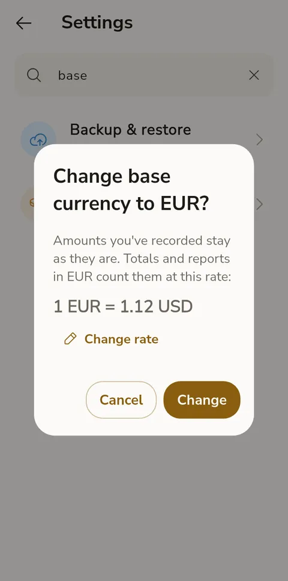
My notifications aren't working
Make sure notifications are enabled in your device settings for BudgetSeal. On Android 13+, you need to grant notification permission explicitly. Go to Settings → Notifications to configure daily reminders and bill alerts. BudgetSeal asks for the permission the first time you open your budget. Bill reminders are scheduled for each bill (see Upcoming bills); envelope alerts are checked when the app opens or comes back, at most once a day each; the daily reminder skips days you've already logged something.
Home screen widgets (Android)
Long-press your home screen, choose Widgets and find BudgetSeal. There are three:
- Summary — your Ready to assign amount and what you've spent today. Tap it to open BudgetSeal
- Envelopes — up to four spending envelopes (in your Budget order) and what's left in each; overspent ones are red. Tap it to fund your envelopes
- Quick add — one button that opens a new transaction
Widgets update each time you leave the app, and follow your phone's light or dark mode.